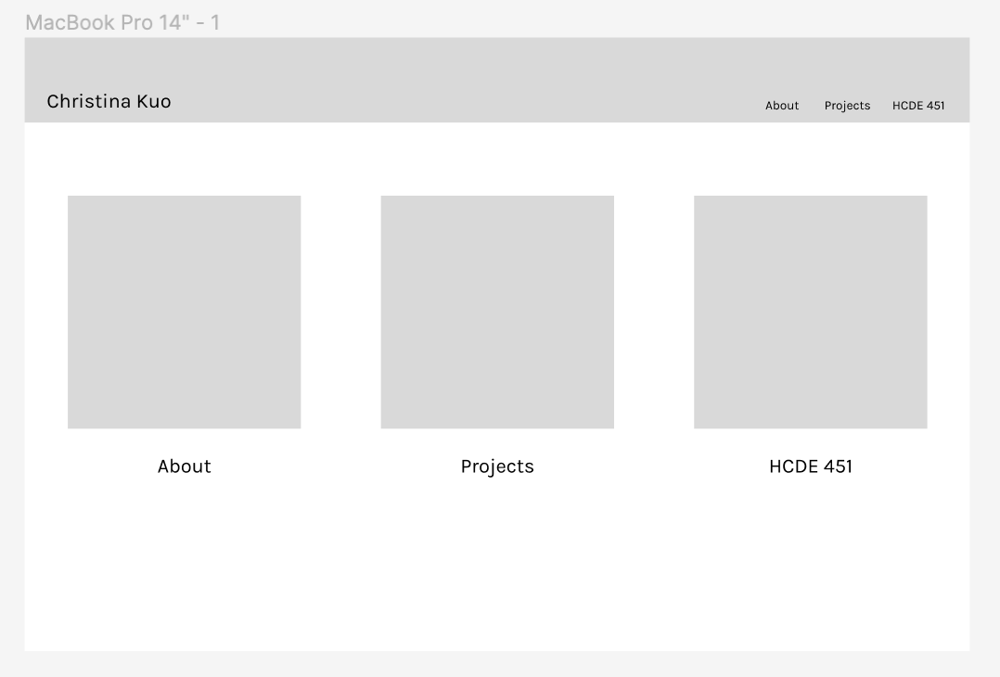
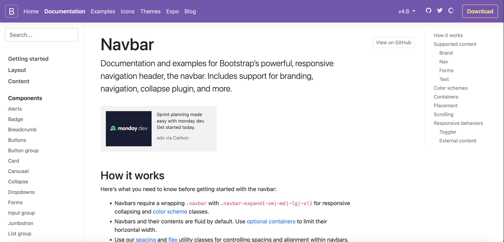
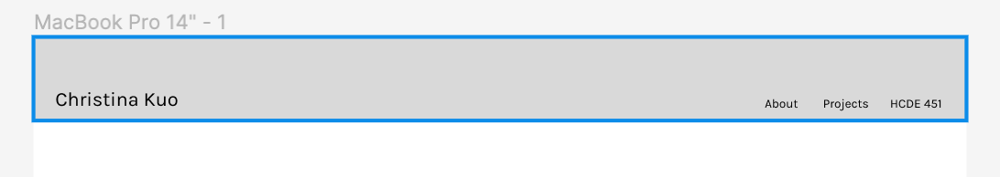
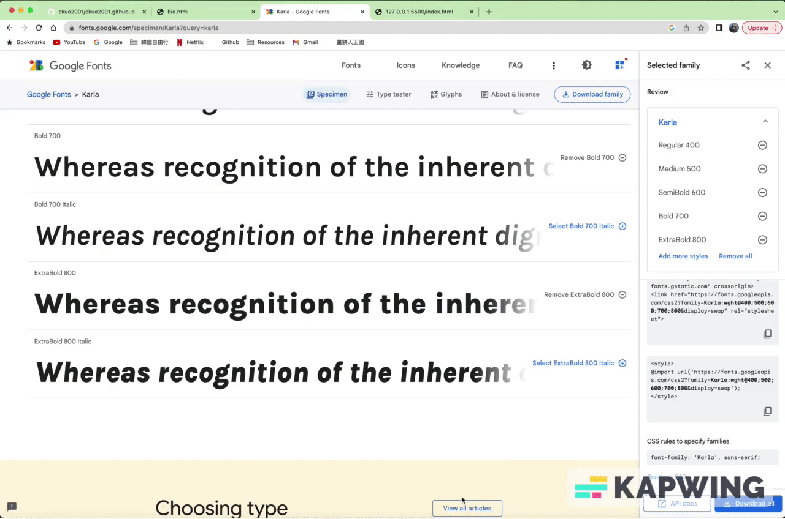
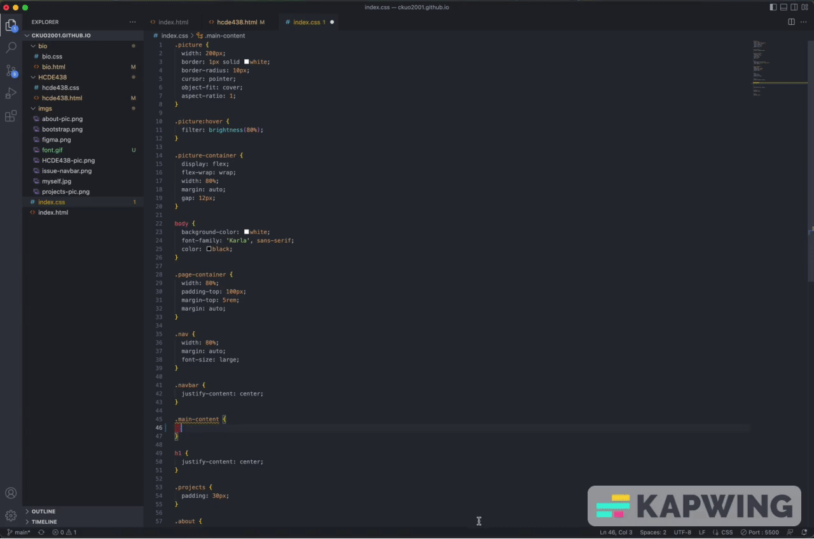

To start this project, I first designed the basic appearance of this website on Figma.
I did not spend too much time on it as I was not sure how hard it would be to code it out by myself. So, I decided to keep this website's design simple and will add more aesthetics later on.
Next is the coding part. I started with HTML since I was more familiar with it. Because of my past coding experience, I was not confident in programming. I was scared that I could not code what I wanted the website to be like. To solve this problem, I decided to go slower, step by step. Make sure that everything in HTML is correct first, and move on to CSS.
After HTML, it was the most difficult part -- CSS. The reason that stopped me from coding was CSS. The work in CSS was too complicated and tedious. So I did not really enjoy coding in CSS.
However, I searched for some online resources, like Bootstrap, as other classmates recommended, and it helped me a lot. It is not difficult to understand at all and it reduced my workload a lot. I am glad that I learned how to use Bootstrap, which increased my confidence in coding a little.
I had some trouble on making a navigation bar when I started the CSS part of this project. I was not sure about making the buttons horizontal and aligning to the right, while adding my website's name on the top-left corner.
The way I fixed was that -- asking other people. I asked a classmate about making a navigation bar as a starting point to solve the problem. She mentioned Bootstrap, a website that I had heard about a lot before but was not sure how to use it. So, I went onto Bootstrap and saw there were a lot of examples of code for different components. I found the pages for Nav and Navbar components. I looked through the pages and found what I wanted for my navigation bar.
I am glad that I was introduced to Bootstrap. Knowing Bootstrap makes my process of coding easier and less stressful. I am for sure learning more about this website later on and saving it for my future coding process.
The first CSS transition I added was the font style. I love a font called Karla because it is clean and easy to read. I found the font on Google Fonts first and used the pre-made link from Google Fonts to insert the font into my HTML and CSS.
The other CSS transition I added was the flexbox feature. I hoped to make the sub-pages to be horizontal on my homepage so readers could easily see the contents. So, I searched for how to make it work and found Flexbox.
This is just a basic website without many decorations and aesthetics. As the quarter goes on, I will update this website more and add more CSS transitions to make this portfolio looks amazing!